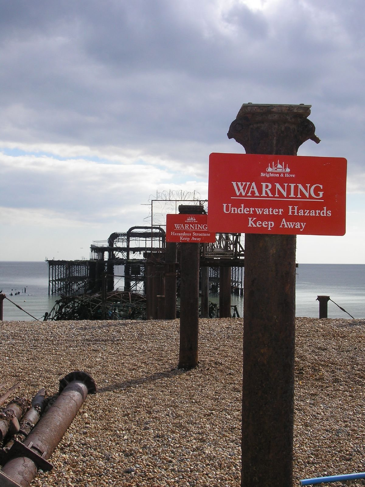
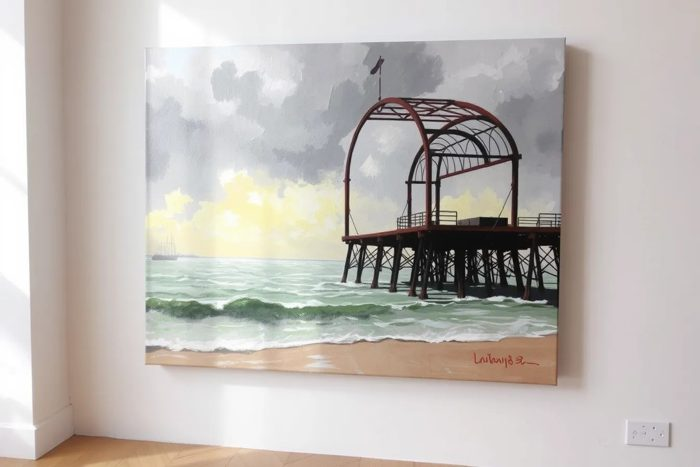

View 225 of 162
The latest damaged view of the pier, No. 225
Originally: Brighton West Pier 20060410 warnings by Les Chatfield, 2006-04-10
Condition report (2006): skeleton. Still standing, mostly.
- Made by
- A human
- Artist
- Les Chatfield
- Original title
- Brighton West Pier 20060410 warnings
- Source
- Wikimedia Commons
- Licence
- CC BY 2.0

Keys: ← → walk the pier · W wanders · ← previous / next by a person →

In conversation withNo. 249, by a guest AI (FLUX.1-schnell)Untitled (oil on canvas)Hung opposite, by the curator's dice: a view by the machine.